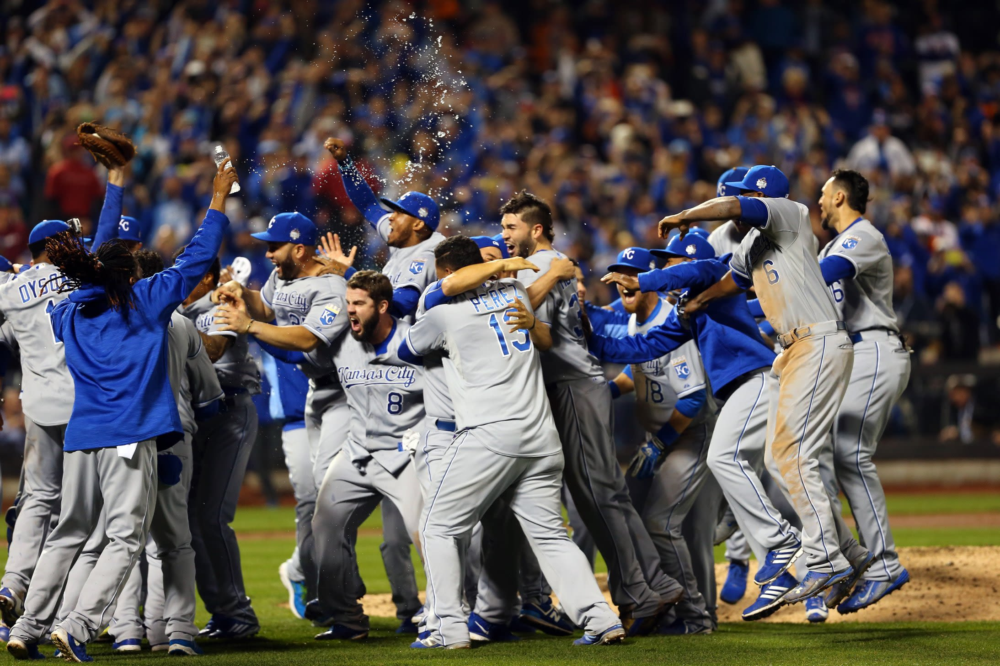

Origins
The Kansas City Royals were established in 1969 as an expansion team, quickly becoming a cornerstone of Midwest baseball.
Milestones
- 1969: Royals founded
- 1985: First World Series Championship
- 2014: Return to the World Series
- 2015: Second World Series Championship
- Present: Building for the future
Learn more at Official Royals Website.